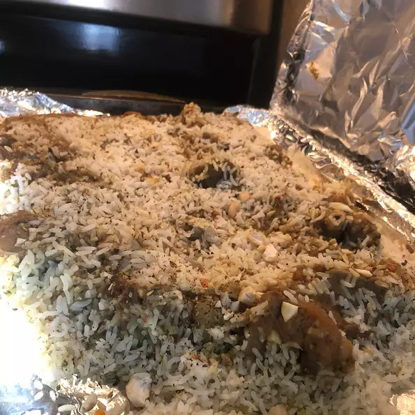

Shyam's Goat Biryani

Description
Biryani is a mixed rice dish originating among the Muslims of the Indian
subcontinent. It is made with Indian spices, rice, and usually some type
of meat or in some cases without any meat, and sometimes, in addition,
eggs and potatoes.
Ingredients
- 1 ½ pounds goat meat
- 1 ¼ cups plain Greek yogurt, stirred
- 6 pitted prunes, or more to taste
- 3 ½ tablespoons diced fresh ginger
- 1 ¼ tablespoons garlic paste
- 1 ½ teaspoons salt, or to taste
- 1 ½ teaspoons ground cumin
- 1 ½ teaspoons ground black pepper
Steps
-
Mix goat meat, yogurt, prunes, ginger, garlic paste, 1 1/2 teaspoons salt, cumin, black pepper, turmeric, red chile pepper, cinnamon, and cloves together in a bowl. Cover bowl with plastic wrap and marinate in the refrigerator, 8 to 14 hours.
-
Rinse the rice under lukewarm water 2 times. Place rice in a pot and cover with enough cold water to reach 1 1/4 to 1 1/2 inches above rice; soak for 1 hour.
-
Melt unsalted butter in a large skillet over low heat; cook and stir onions until translucent and golden, about 10 minutes. Add tomatoes; cook and stir until oil separates and rises to the surface, 5 to 10 minutes.
-
Mix marinated goat meat mixture and potatoes into onion mixture; cook and stir until meat is browned and cooked through, 20 to 30 minutes. Pour 1 1/2 cups cold water (or enough to cover) over goat meat mixture and cook until meat is tender, 30 to 40 minutes. Increase heat to medium and cook, stirring frequently, until oil separates from the mixture, about 5 minutes. Decrease heat to low and keep warm.
-
Bring 12 cups water, 3 tablespoons salt, and 1 tablespoon butter to a boil in a large pot for 3 to 4 minutes. Drain rice and add to boiling water; cook for 10 minutes. Remove from heat and carefully drain water.
-
Spoon 1/2 the rice into the bottom of a large baking dish; top with 1/2 the goat meat mixture. Arrange 1/2 the bay leaves over goat meat mixture. Repeat layering with remaining rice, goat meat mixture, and bay leaves. Cover dish with aluminum foil.
Return to index page